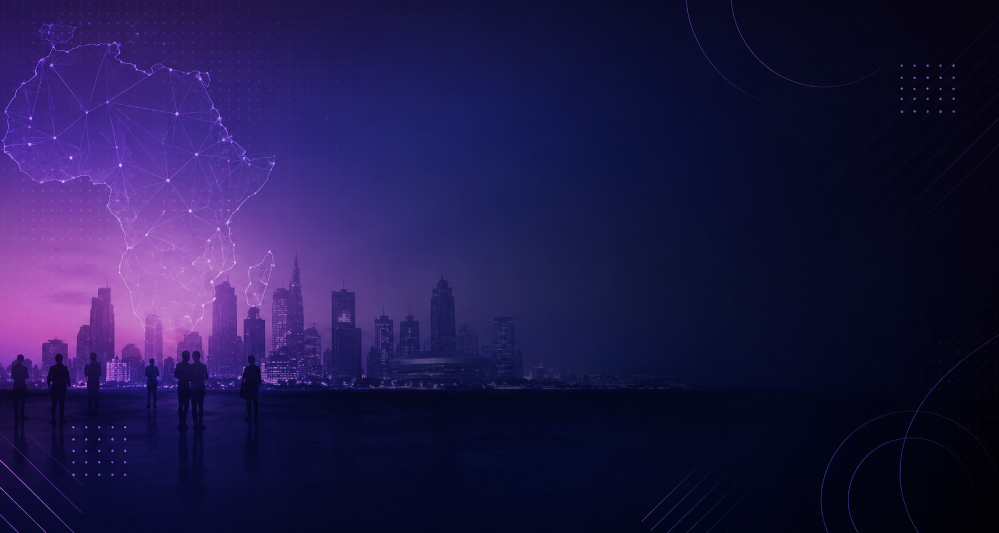
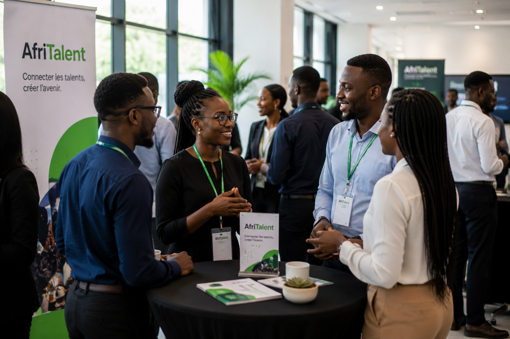
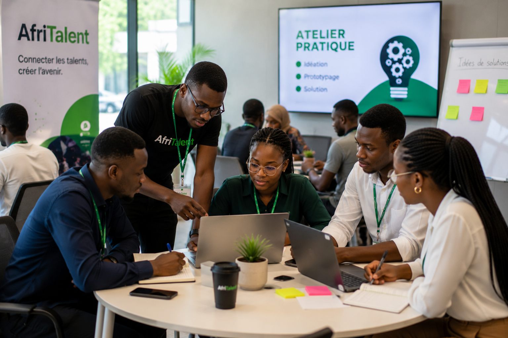
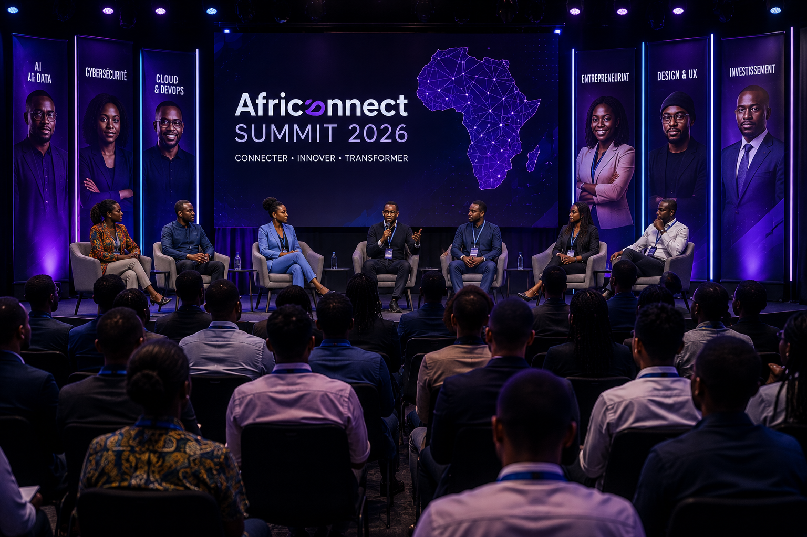
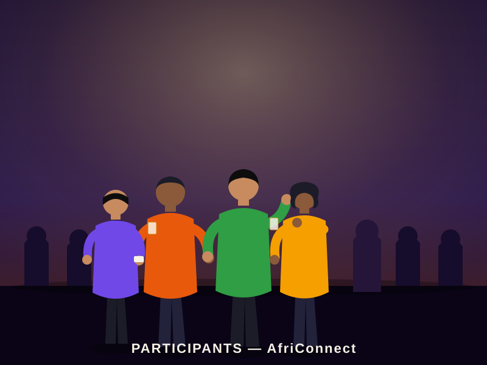
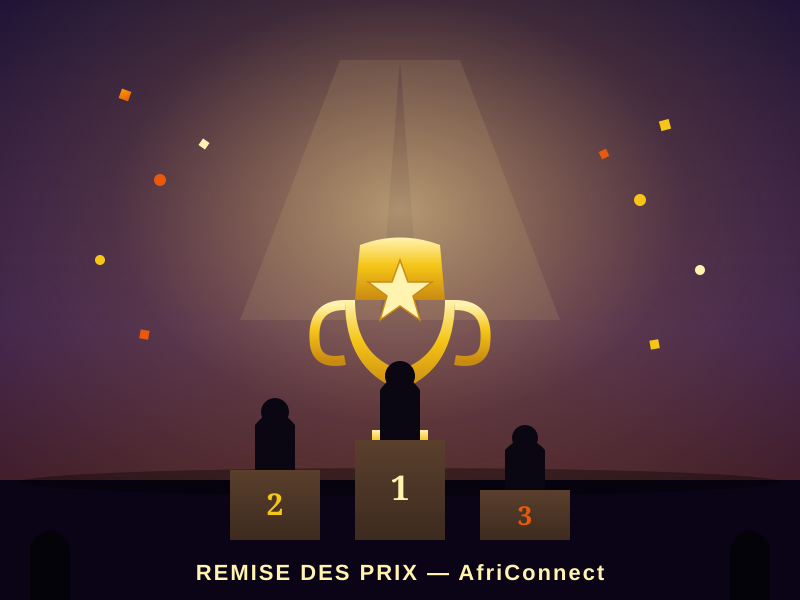

Innovation
Découvrir les dernières innovations en intelligence artificielle, cybersécurité, développement web, cloud computing et technologies mobiles.
Pendant trois jours, AfriConnect Summit rassemble des développeurs, étudiants, designers, entrepreneurs, chercheurs et investisseurs venus de toute l'Afrique afin de partager leurs expériences, découvrir les nouvelles technologies et construire les projets de demain.
Participants
Intervenants
Pays

Innovation • Entrepreneuriat • Numérique
AfriConnect Summit est une conférence technologique fictive qui rassemble des acteurs du numérique venant de plusieurs pays d'Afrique. L'objectif est de favoriser le partage des connaissances, le réseautage et l'innovation afin de contribuer au développement de l'écosystème numérique africain.
Découvrir les dernières innovations en intelligence artificielle, cybersécurité, développement web, cloud computing et technologies mobiles.
Favoriser les échanges entre étudiants, développeurs, startups et entreprises afin de créer de nouvelles opportunités.
Encourager la montée en compétence des jeunes talents africains grâce aux conférences, ateliers et démonstrations pratiques.
Organiser des ateliers pratiques pour développer les compétences techniques des participants.
Mettre en relation les professionnels du numérique venant de différents pays africains.
Soutenir les jeunes porteurs de projets et les startups innovantes.
Récompenser les meilleures initiatives et encourager les solutions numériques africaines.
Participants attendus
Intervenants internationaux
Jours de conférences
Pays représentés
Que vous soyez étudiant, développeur, entrepreneur ou investisseur, AfriConnect Summit vous permet d'acquérir de nouvelles compétences et d'élargir votre réseau.
Assistez à des conférences animées par des experts africains et internationaux.
Participez à des ateliers pratiques en développement web, cybersécurité et intelligence artificielle.
Rencontrez des étudiants, entreprises, startups et professionnels du numérique.
Explorez les offres de stage, d'emploi et les projets proposés par nos partenaires.
Cérémonie d'ouverture, conférences inaugurales, présentation des partenaires et networking.
Ateliers pratiques, démonstrations techniques, compétitions et rencontres avec les startups.
Table ronde, remise des prix, clôture officielle et cocktail de fin d'événement.
| Heure | Activité | Salle |
|---|---|---|
| 09h00 | Accueil des participants | Hall principal |
| 10h00 | Conférence d'ouverture | Auditorium |
| 11h30 | Innovation & IA | Salle A |
| 14h00 | Développement Web Moderne | Salle B |
| 16h00 | Networking | Espace Expo |
Découverte des applications de l'IA dans différents secteurs d'activité.
Les bonnes pratiques du développement front-end, back-end et mobile.
Protection des données, sécurité des applications et des réseaux informatiques.
Création de startups, innovation et financement des projets numériques.
Découvrez quelques experts qui partageront leurs expériences, leurs conseils et leurs innovations durant AfriConnect Summit 2026.
Ingénieure en IA spécialisée dans le traitement des données médicales et l'innovation numérique.

Passionné par les technologies web modernes et les applications cloud destinées aux startups africaines.

Designer spécialisée dans la création d'interfaces accessibles et centrées sur l'expérience utilisateur.
Fondateur de plusieurs startups spécialisées dans les solutions numériques pour les PME africaines.
Cette conférence m'a permis de rencontrer plusieurs recruteurs et de décrocher mon premier stage.
Les ateliers étaient très intéressants et les intervenants étaient disponibles pour répondre à toutes nos questions.
Une excellente occasion de découvrir les innovations numériques développées en Afrique.
Découvrez quelques moments forts des éditions précédentes d'AfriConnect.






Retrouvez ci-dessous les réponses aux questions les plus posées par les futurs participants.
Les étudiants, développeurs, entrepreneurs, enseignants et passionnés de technologie.
Plusieurs formules sont proposées afin de permettre à chacun de participer selon son profil.
Oui, tous les participants recevront une attestation officielle de participation.
Ne manquez pas trois journées de conférences, d'ateliers, de rencontres et d'innovations dédiées au numérique africain.